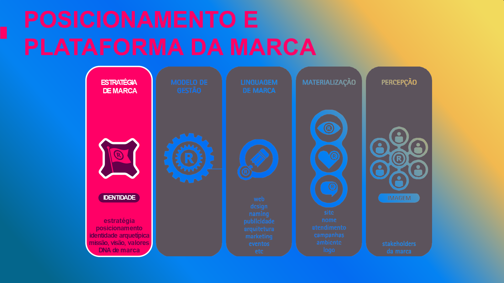
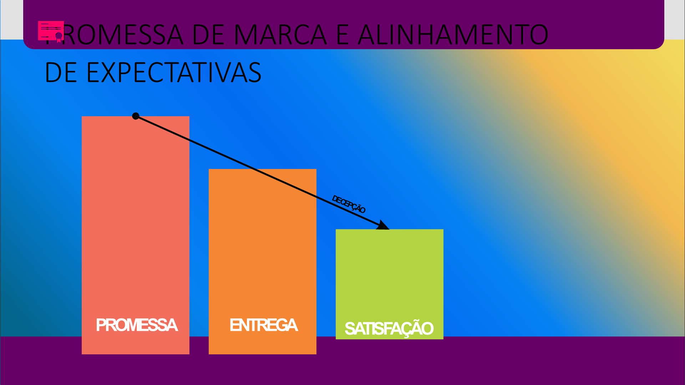
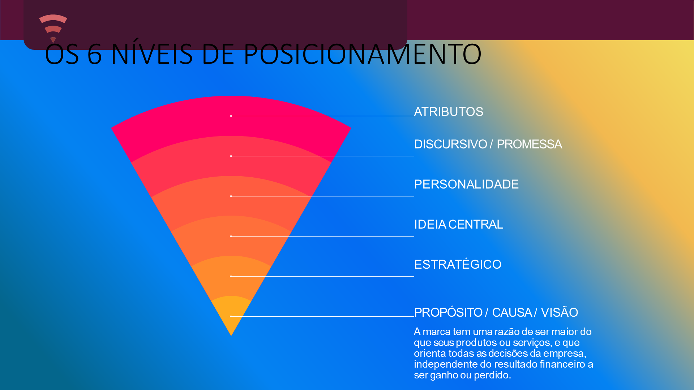
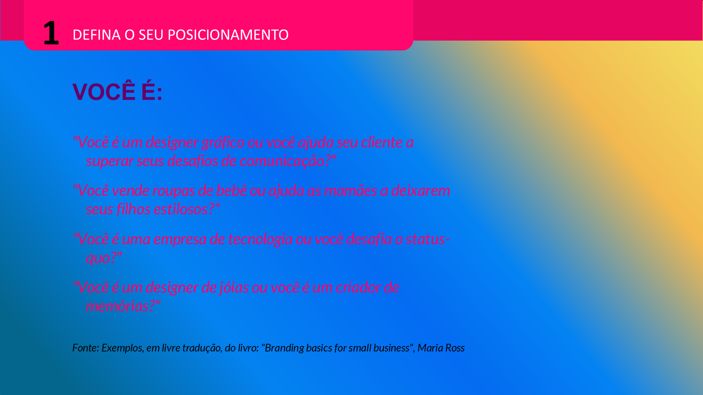
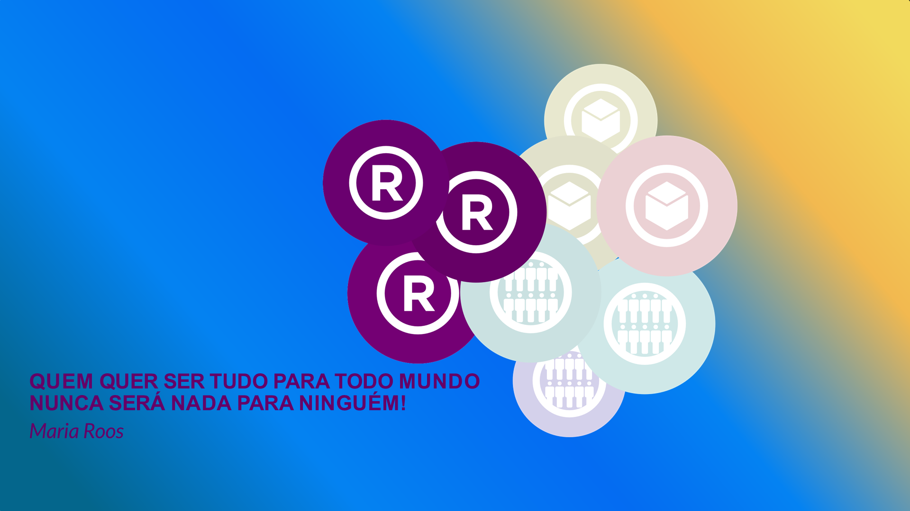
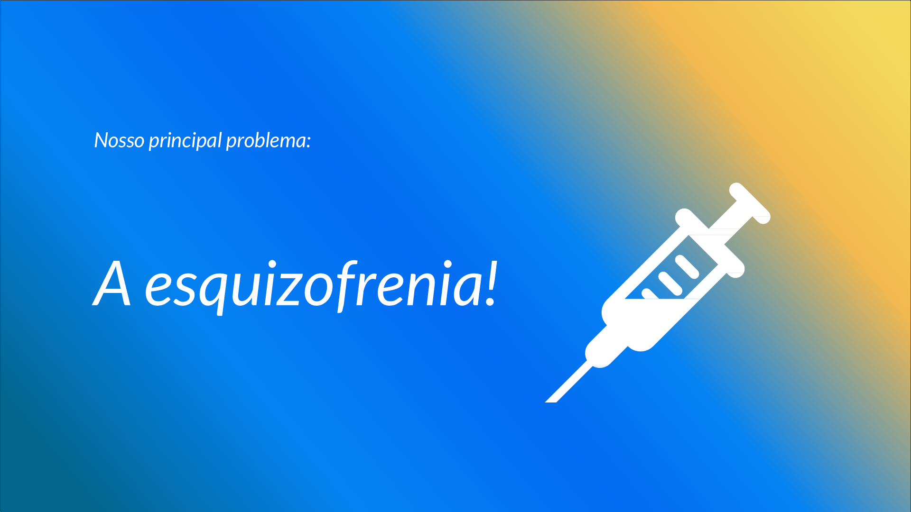
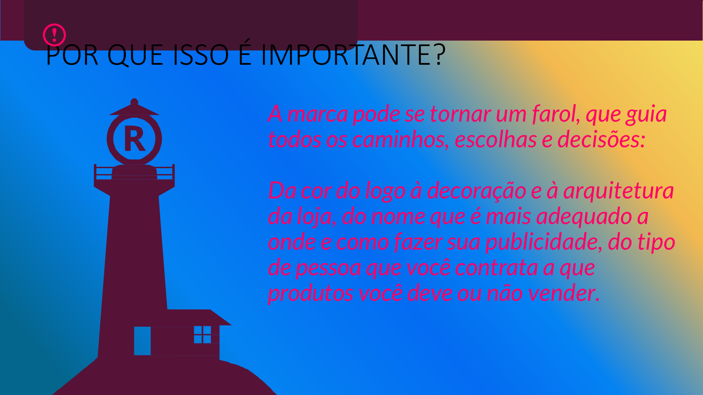

flowchart TB
P["POSICIONAMENTO"]
P --> D["DEMANDA<br/>(Interesse)"]
P --> C["CREDIBILIDADE<br/>(Confiança)"]
P --> A["AFINIDADE<br/>(Conexão)"]
P --> PR["PROMESSA<br/>(Expectativa)"]
D --> D1["Diferenciais<br/>Benefícios"]
C --> C1["Pontos de prova<br/>Evidências"]
A --> A1["Personalidade<br/>Propósito<br/>Visão de mundo"]
PR --> PR1["Proposta de<br/>valor única<br/>(PUV)"]
style P fill:#1b5e20,color:#fff
style D fill:#e8f5e9
style C fill:#e8f5e9
style A fill:#e8f5e9
style PR fill:#e8f5e9
12 Posicionamento de Marca no Agro
Posicionamento não é o que você escreve no papel. É o lugar que sua marca ocupa na mente do público. Neste capítulo, transformamos toda a análise anterior, diferenciação, benefícios, público, em uma posição de mercado clara e defensável.
12.1 O que é posicionamento

Ao longo dos capítulos anteriores, respondemos a perguntas essenciais. Definimos o que vendemos em termos de produtos e portfólio (Capítulo 9), identificamos o que nos diferencia por meio de ideias diferenciadoras e suporte (Capítulo 6, Capítulo 7), articulamos o que entregamos de valor em forma de benefícios (Capítulo 8) e delineamos para quem vendemos ao caracterizar o público ideal (Capítulo 10).
Posicionamento é a síntese estratégica de todas essas respostas. É a definição precisa do lugar que a marca pretende ocupar na mente do público-alvo, de forma clara (o público entende o que a marca é e oferece), diferenciada (a marca não se confunde com as concorrentes), relevante (o posicionamento importa para o público), crível (a marca pode entregar o que promete) e sustentável (o posicionamento se mantém ao longo do tempo).
NotaDefinição
Posicionamento é a posição que a marca ocupa na mente do público, não o que a empresa declara, mas o que o público de fato percebe e associa.
12.2 A arquitetura do posicionamento
O posicionamento de uma marca no agro se constrói sobre quatro pilares:
12.2.1 Pilar 1, Demanda (Criar interesse)
O que faz o comprador se interessar pela marca? São os diferenciais e os benefícios que explorámos nos capítulos anteriores.
Pergunta-chave: “Por que o comprador deveria prestar atenção em mim?”
12.2.2 Pilar 2, Credibilidade (Criar confiança)
O que faz o comprador confiar na marca? São os pontos de prova: certificações, prêmios, depoimentos, dados, histórico.
Pergunta-chave: “Por que o comprador deveria acreditar no que digo?”
12.2.3 Pilar 3, Afinidade (Criar conexão)
O que faz o comprador sentir que a marca é relevante para ele, para além do produto? São a personalidade, o propósito e a visão de mundo da marca.
Pergunta-chave: “O que cria uma conexão emocional ou ideológica entre a marca e o público?”
12.2.4 Pilar 4, Promessa (Criar expectativa)

A síntese de tudo em uma proposta de valor única (PUV), a promessa central que a marca faz ao mercado.
Pergunta-chave: “Em uma frase, o que minha marca promete e entrega?”
12.3 Construindo o posicionamento passo a passo

12.3.1 Passo 1, Declaração de posicionamento

Uma declaração de posicionamento segue uma estrutura simples mas poderosa:
Para [público ideal],
a [nome da marca] é [categoria]
que [promessa diferenciada],
porque [razão para acreditar].
Exemplo:
Para chefs e restaurantes que valorizam ingredientes de origem controlada,
a Fazenda Nascentes é a produtora de café especial do Cerrado
que entrega lotes rastreados com perfil sensorial personalizado,
porque cultiva exclusivamente em sistema agroflorestal acima de 1.100m de altitude
e monitora cada lote desde a muda até a xícara.
12.3.2 Passo 2, Mapa de posicionamento perceptual
Posicionar sua marca em relação aos concorrentes usando dois eixos relevantes para o mercado:
quadrantChart
title Posicionamento Perceptual, Café
x-axis "Commodity" --> "Especial"
y-axis "Convencional" --> "Sustentável"
quadrant-1 "Premium Sustentável"
quadrant-2 "Sustentável Acessível"
quadrant-3 "Commodity Convencional"
quadrant-4 "Especial Convencional"
"Fazenda Nascentes": [0.85, 0.90]
"Concorrente A": [0.70, 0.40]
"Concorrente B": [0.30, 0.20]
"Concorrente C": [0.50, 0.65]
"Trading Genérica": [0.15, 0.15]
O mapa revela onde há espaço (quadrantes pouco ocupados são oportunidades), onde há competição (aglomerações indicam saturação) e onde você está em relação a onde gostaria de estar.
12.3.3 Passo 3, Mensagens-chave
Com o posicionamento definido, derive as mensagens que serão utilizadas nos pontos de contato:
| Contexto | Mensagem |
|---|---|
| Em uma frase (pitch) | “Café de floresta: da muda à xícara, com rastreabilidade total” |
| Para o comprador B2B | “Lotes personalizados com laudo sensorial de cada colheita” |
| Para o consumidor B2C | “O café que nasce sob a sombra de árvores centenárias” |
| Para investidores/parceiros | “Modelo agroflorestal com margem 2x superior à monocultura” |
| Para redes sociais | “Do solo à xícara, conheça cada etapa do seu café” |
12.4 Erros comuns de posicionamento no agro

12.4.1 1. Posicionamento genérico
“Nosso café é de qualidade.”, Não posiciona, porque todos dizem o mesmo.
12.4.2 2. Posicionamento aspiracional sem entrega
“Somos a marca mais sustentável do agro.”, Se não há evidência sólida, é promessa vazia.
12.4.3 3. Posicionamento instável
Mudar o posicionamento a cada safra ou campanha. Posicionamento precisa de tempo para se consolidar na mente do público.
12.4.4 4. Posicionamento copiado
Replicar o posicionamento de um concorrente. Se o concorrente já ocupa aquele espaço mental, você será percebido como imitação.
12.4.5 5. Posicionamento irrelevante

Posicionar-se em um atributo que o público não valoriza. “O café mais leve do mercado” não funciona se o público busca corpo e intensidade.
12.5 O posicionamento como filtro decisório

Uma vez definido, o posicionamento funciona como filtro para todas as decisões da marca. Ao considerar o lançamento de um produto, pergunte se está alinhado com o posicionamento. Ao avaliar a participação em uma feira, verifique se o público da feira é o seu público. Ao decidir aceitar um novo cliente, avalie se ele valoriza o que a marca propõe. Ao responder nas redes sociais, considere como a personalidade da marca responderia. Ao cogitar baixar o preço, reflita se isso compromete o posicionamento.
O posicionamento não é apenas o que você comunica, é o que orienta cada decisão do negócio.
12.6 Exercício prático, Posicionamento
12.6.0.1 🌿 Ferramenta: Canvas de Posicionamento Agro
1. Declaração de posicionamento:
Para _________________ (público ideal),
a _________________ (marca) é _________________ (categoria)
que _________________ (promessa diferenciada),
porque _________________ (razão para acreditar).
2. Os quatro pilares:
| Pilar | Conteúdo |
|---|---|
| Demanda (por que se interessar?) | |
| Credibilidade (por que confiar?) | |
| Afinidade (por que se conectar?) | |
| Promessa (o que esperar?) |
3. Teste do posicionamento:
Se todas as respostas forem sim, você tem um posicionamento forte.